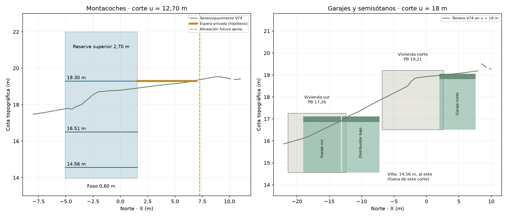
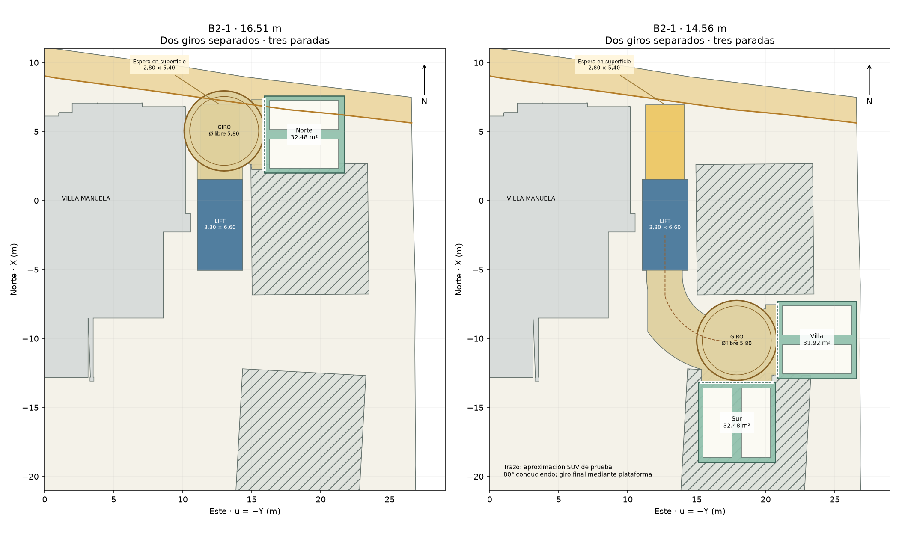
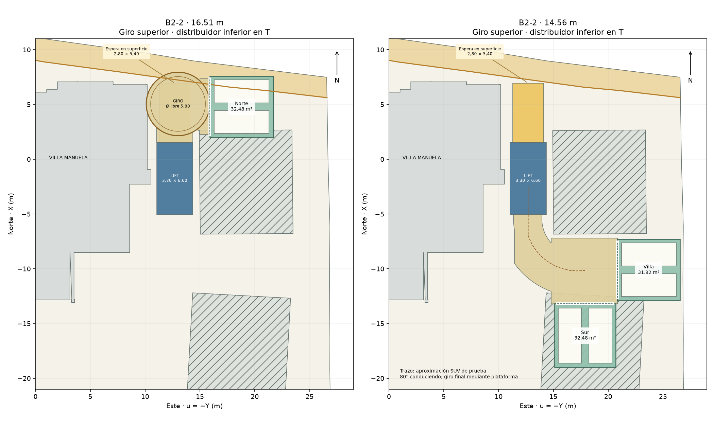
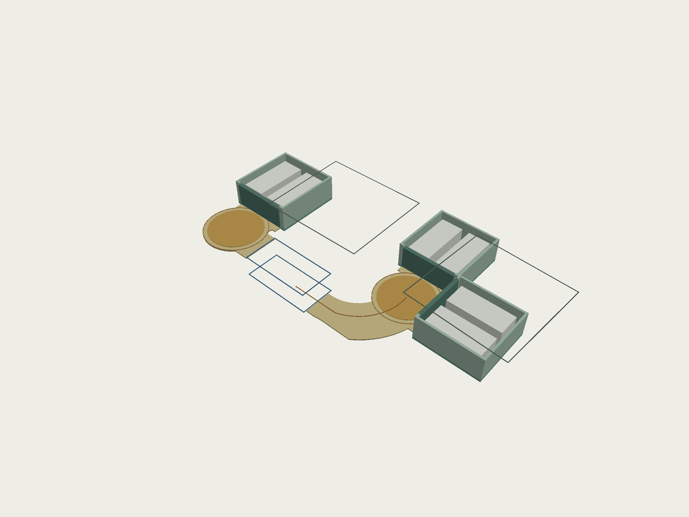

VILLA MANUELA · B2 · ESTUDIO AUXILIAR V77 · 12/09/2026
Garajes escalonados.
Dos desembarcos separados.
Recomendación provisional: B2-1, con un giro por nivel. Conserva el garaje norte a 16,51 m y agrupa Villa/Sur a 14,56 m. Separa los distribuidores hacia extremos opuestos del montacoches, evitando superponer plantas separadas solo 1,95 m.
Es un estudio geométrico, no una solución definitiva validada. Quedan condicionados el subsuelo de la futura acera, el nuevo vado, la contención próxima a edificios y el encuentro de cubierta con terreno. No se han modificado las viviendas, la topografía ni los muros existentes.
El visor abre sin propuesta. En “B2 · ESTUDIO” se elige la alternativa; “INSPECCIÓN” permite ver el nivel 16,51, el 14,56 o ambos sin el terreno que los oculta. Estos controles cambian únicamente la visualización. Las dos viviendas nuevas y la variante de acera originales se conservan.
Dos variantes dentro de la misma estrategia
Suma de niveles: recintos + maniobra + hueco de lift por nivel + reserva perimetral indicativa de 25 cm. Huella: unión horizontal sin contar dos veces el hueco común. No son superficies normativas. Maniobra incluye las aproximaciones completas; excluye garajes, lift y espera superficial. La espera ocupa 15,12 m², superpuesta en planta al distribuidor alto.
| Recinto privado (ambas variantes) | Dimensión útil | Superficie | Cota | Posición |
|---|
| Vivienda norte · 2 SUV | 5,80 × 5,60 m | 32,48 m² | 16,51 m | Al norte de la vivienda norte, asociado a su SS; portón oeste. |
| Villa Manuela · 2 SUV | 5,70 × 5,60 m | 31,92 m² | 14,56 m | Al este del distribuidor bajo, junto al límite oriental; portón oeste. |
| Vivienda sur · 2 SUV | 5,80 × 5,60 m | 32,48 m² | 14,56 m | Dentro de la huella de su SS; portón norte. |
Las plazas útiles tienen 2,80 m de anchura. Para el vehículo de 5,00 × 2,10 m quedan 0,35 m hacia cada pared y 0,70 m entre coches, y entre 0,35 y 0,40 m en cada extremo longitudinal. Se representan portones de 5,10 m sin pilar central. Son plazas convencionales con apertura parcial de puertas, no garantía de apertura total simultánea ni plazas accesibles. No se dimensionan aún pilares, vigas ni ventilación.
Montacoches y espera ajustada
Se desplaza 0,65 m hacia el norte respecto a V76. Hueco exterior de estudio: 3,30 × 6,60 m, X = −5,05…1,55; Y = −14,35…−11,05. Plataforma reservada: 2,70 × 5,80 m; requiere selección de equipo y confirmación de holguras.
- Espera: 2,80 × 5,40 m = 15,12 m², un 24 % menos que V76. Queda íntegramente detrás de la alineación futura, a aproximadamente 0,13 m de ella. No se contabiliza ninguna superficie de acera como espera.
- La acera se cruza mediante un vado. La entrada directa propuesta no coincide plenamente con el portón actual: necesitaría ajustar el hueco del cerramiento en una fase posterior. El muro y las puertas existentes permanecen intactos en V77; no se ha comprobado aún el giro desde cada sentido de la carretera.
- Paradas: 19,30 → 16,51 → 14,56 m. Dos desembarcos inferiores: el alto al norte, el bajo al sur. El equipo requiere puertas opuestas con selección por parada.
- Recorrido vertical máximo: 4,74 m. Foso reservado: 0,60 m, fondo a 13,96 m. Reserva superior: 2,70 m, hasta 22,00 m; el volumen del montacoches sobresale del terreno y no está arquitectónicamente resuelto.
- Separaciones del hueco: 0,52 m a la proyección de Villa y 0,59 m a la vivienda norte. No equivalen a holguras de excavación ni verifican cimentaciones.
Como referencia de escala, Hidral ECH declara 2–3 niveles y hasta 7 m de recorrido; esto no valida el equipo concreto, las puertas ni las dimensiones reservadas aquí.

Los distribuidores están desplazados horizontalmente, no apilados. Con 1,95 m entre sus cotas no cabría un garaje debajo del otro. En este esquema no se intersectan sus envolventes auxiliares fuera del hueco común del lift.
B2-1 · Giro alto + giro bajo

Plataformas: discos Ø 5,00 m, con barrido libre reservado Ø 5,80 m. Alto: u = 13,00; X = 5,05, por delante del garaje norte. Bajo: u ≈ 17,90; X ≈ −10,14, entre el garaje Villa al este y el garaje sur al sur. Son dos equipos; una misma plataforma física no sirve niveles diferentes.
Recorridos: para Norte se desciende a 16,51 y se retrocede aproximadamente 6,8 m desde el centro del lift hasta el giro alto, siempre en ámbito privado. La plataforma orienta el coche hacia su garaje. Para salir hacia la calle de frente, se orienta el coche al norte y se entra marcha atrás al lift. Esta solución no elimina esa inversión.
Para Villa y Sur se desciende a 14,56 y se sale hacia el sur, de frente. Una curva de 80° lleva al giro bajo; la plataforma completa la orientación hacia el portón elegido. El recorrido desde el centro del lift hasta el giro es del orden de 11 m, más unos 6 m hasta el centro de plaza. Al salir de la plaza se retrocede hasta el giro, que permite regresar al lift y a la carretera de frente. La marcha atrás se concentra en garajes y en el acceso norte, no se elimina totalmente.
Maniobra alta: 31,0 m²; baja: 51,7 m². Cada recinto es privado y cerrable, sin usar otro garaje como calle de acceso.
Ventajas: mantiene las cotas de ambos SS, elimina el cruce del forjado norte de V76-B, evita el nivel 13,61 de V76-C y permite orientar el SUV sin maniobra de varios tiempos en el distribuidor bajo. Inconvenientes: dos máquinas, retroceso privado para Norte, ocupación de más parcela que V76-C y dependencia del subsuelo de la franja de acera.
B2-2 · Giro alto + distribuidor bajo en T

Mismos garajes, cotas, lift y giro alto. Se elimina la plataforma inferior y se reserva una T de maniobra, ajustada entre ambos edificios nuevos.
Ventaja: un equipo menos y menor mantenimiento. Desventaja: necesita maniobras de varios tiempos en la zona baja, especialmente para orientarse hacia el garaje sur. La trayectoria dibujada de llegada de 80° solo queda completada por un giro mecánico en B2-1; en B2-2 es una referencia de aproximación, no una circulación completa validada.
Maniobra alta: 31,0 m²; baja: 54,9 m². Eliminar el giro inferior aumenta la reserva de maniobra solo 3,2 m² en este esquema, pero no demuestra comodidad real del SUV. No se presenta como opción funcionalmente equivalente.
Excavación, contención y jardín
B2-1 supone aproximadamente 680 m³ brutos hasta soleras/foso; B2-2 unos 690 m³. Descontando idealmente el vaciado ya previsto para los dos SS, quedan aproximadamente 560 y 570 m³ adicionales. Son cantidades comparativas, no medición de obra. Profundidades del vaciado de aproximadamente 1,8–5,0 m; en el foso se alcanza 13,96 m.
Contenciones principales: caja estrecha del lift próxima a Villa y vivienda norte; recinto alto bajo la zona de llegada; borde este del garaje Villa junto al límite; perímetro bajo y encuentro con SS sur. La escasa distancia a los edificios y al lindero impide asumir taludes libres. No se dibujan muros definitivos ni se dimensiona una solución de contención.
Encuentro con superficie pendiente: reservando 2,30 m libres y 0,25 m de cubierta, aproximadamente 26,6 m² de techo quedan localmente por encima del terreno, hasta unos 27 cm. Falta además el espesor del acabado o tierra vegetal. No se ha añadido relleno para esconderlo. Reducir espesor, ajustar localmente cotas o resolver una superficie pavimentada requiere otro estudio; no se da por resuelto.
Se utilizan aproximadamente 11,9 m² bajo la franja futura de acera, sin rebasar el perímetro actual. Es una hipótesis de subsuelo, no un derecho municipal confirmado. El tránsito sobre la acera y la titularidad del subsuelo son cuestiones distintas. Si no se permite esta ocupación, ambas variantes requieren replanteo.
Qué se ha comprobado
- Seis plazas, tres recintos independientes; los barridos de entrada desde las plataformas no intersectan el otro SUV estacionado del mismo recinto en el modelo de prueba.
- SUV de ensayo: 5,00 × 2,10 m, batalla 3,00 m, radio del eje trasero 4,50 m. Barrido muestreado de la aproximación baja de 80°, incluyendo carrocería; sin intersección con paredes laterales del lift, Villa o SS norte. La plataforma termina el cambio de orientación.
- No se detectan cruces con el forjado del SS norte a distinto nivel ni con la geometría exterior de Villa en las bandas de altura del estudio. Las cimentaciones no están documentadas en la base y quedan sin verificar.
- Espera íntegra dentro de propiedad, sin acera; perímetros auxiliares dentro del límite actual; distribuidores sin solape vertical fuera del lift.
- La prueba de giro es preliminar y muestreada. No sustituye una simulación completa con el vehículo concreto, radios de dirección certificados, pendiente, portones en movimiento, pilares estructurales ni peatones.
- Conexiones peatonales no modeladas. Norte queda asociado a su SS y Sur integrado en el suyo. Villa está a la cota baja y necesitaría un enlace peatonal propio; no se presupone una entrada existente a esa cota.
Recomendación y comparación con V76
Continuaría con B2-1 como hipótesis de trabajo, por conservar las cotas y ofrecer una maniobra inferior más controlable. El segundo giro ahorra solo 3,2 m² y unos 8 m³ frente a B2-2: su argumento principal es operativo, no un ahorro radical de excavación. Si la maniobra en T se verifica satisfactoria con un SUV concreto, podría eliminarse esa segunda máquina.
Frente a V76-B, se resuelve la incompatibilidad de cotas mediante desembarcos separados, pero aumentan superficie y circulación. Frente a V76-C, se elimina el sótano a 13,61 m, disminuyen aproximadamente un 20 % la maniobra, un 10 % la suma de superficies y un 6 % la excavación bruta. El fondo del foso sube 0,95 m. A cambio, la huella conjunta aumenta, de unos 165 a 227 m².
Villa se sitúa a 14,56 m porque comparte el distribuidor sur sin otra parada ni rampa. Subirla a 16,51 m expondría su volumen en la zona baja; bajarla a 13,61 m añadiría unos 30 m³ de excavación solo bajo ese recinto, además de otra solución de acceso.
No se aprueba una solución definitiva. Antes de avanzar hay que resolver el derecho de subsuelo, vado y cierre, cubiertas respecto al terreno, estructura/contención y maniobra completa. La geometría principal permanece íntegra.
Archivos y verificación del visor
Visor V77 · Mediciones y polígonos · Modelo con auxiliares.
Los 4.217 objetos de V74 se conservan exactamente y se añaden 74 objetos esquemáticos con selector independiente. Se verificaron las combinaciones de alternativa, nivel y alineación, y la restitución de la visualización base. Se revisaron las imágenes generadas con el mismo código de dibujo del visor.

Medición: malla V74, muestreo horizontal de 25 cm, solera 25 cm por debajo del suelo; foso 60 cm. Hay 0,19 m² sin dato superficial interpolable. No incluye esponjamiento, sobreexcavación, servicios ni cimentaciones; incertidumbre de orden al menos ±20 %. Las reservas estructurales no son un cálculo. Dibujos 3D simplificados a 1,5 cm solo en los nuevos auxiliares. Fuente técnica: referencia dimensional de Hidral enlazada arriba.
Guardado: /Users/gorkanelson/Documents/Hirubrik/Villa Manuela/3D/Villa-Manuela-v05-trabajo. V74, V75 y estudio V76 se conservan.